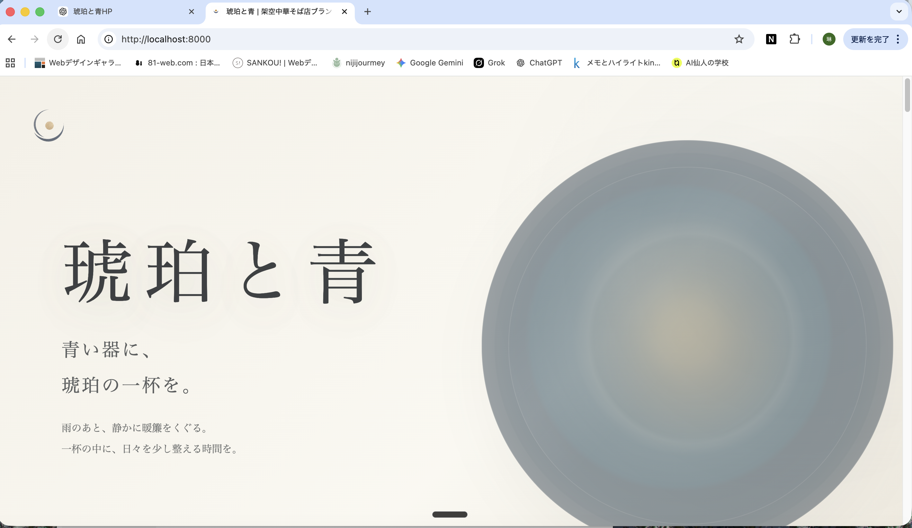
Home
静かに伝わるWeb表現をつくる。
Web制作、AI活用、文章表現を学びながら、余白と言葉を大切にしたサイト制作に取り組んでいます。
Web Design
Brand Site
Responsive
AI Support
View Works
Works
制作実績
架空ブランドを題材に、余白や言葉、スクリーンショットの見せ方を整理した作品を掲載しています。
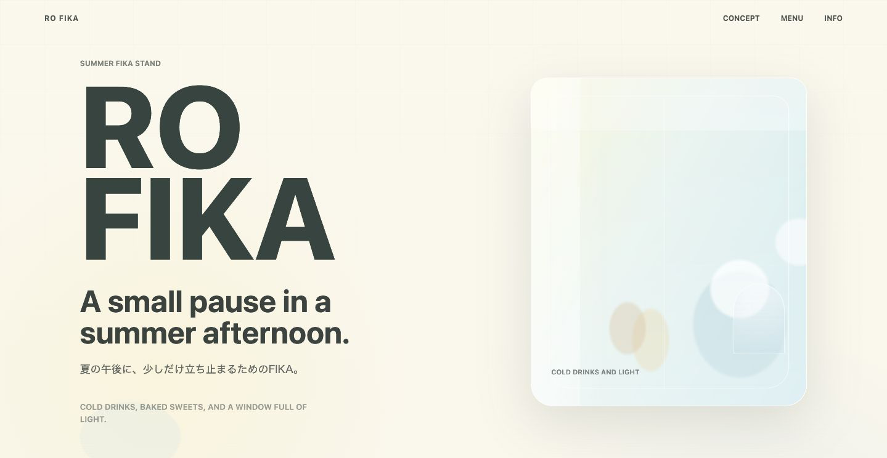
Project Detail
琥珀と青
架空の中華そば店を想定したブランドサイト。 青い器と琥珀色の一杯を軸に、余白・縦書き・横スクロールで静かな余韻を表現しました。
Overview
青い器に、琥珀の一杯を。
「琥珀と青」は、静けさ・余白・食後の余韻をWeb上で表現することを目指した、1ページ構成の架空ブランドサイトです。
Motion
縦書きの言葉を、景色として流す。
横スクロール思想セクションでは、短い縦書きの言葉を余白の中に置き、情報ではなく景色のように見える構成を目指しました。
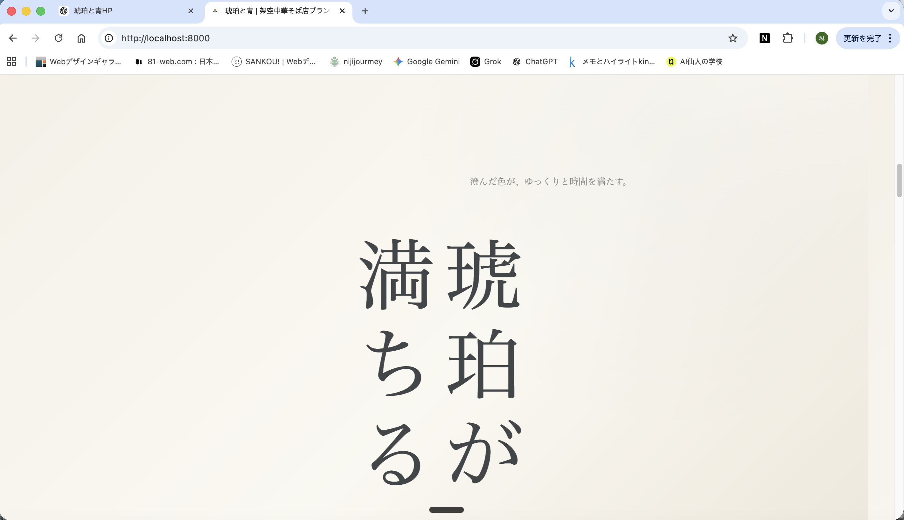
Menu
世界観から、店舗らしさへ着地する。
Menuセクションでは、架空の中華そば店としての具体性を見せつつ、チラシのように強く売り込まない静かな紹介にしています。
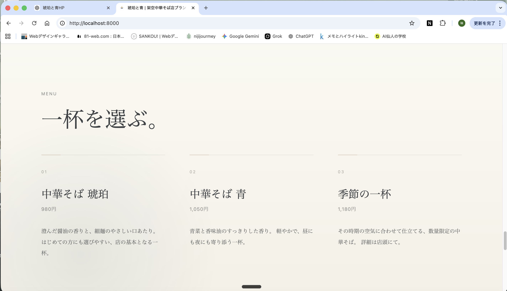
Season Note
季節の空気を、短い読み物で足す。
Season Noteは、季節ごとにサイト全体の空気感を少し変えるための短い読み物として設計しました。
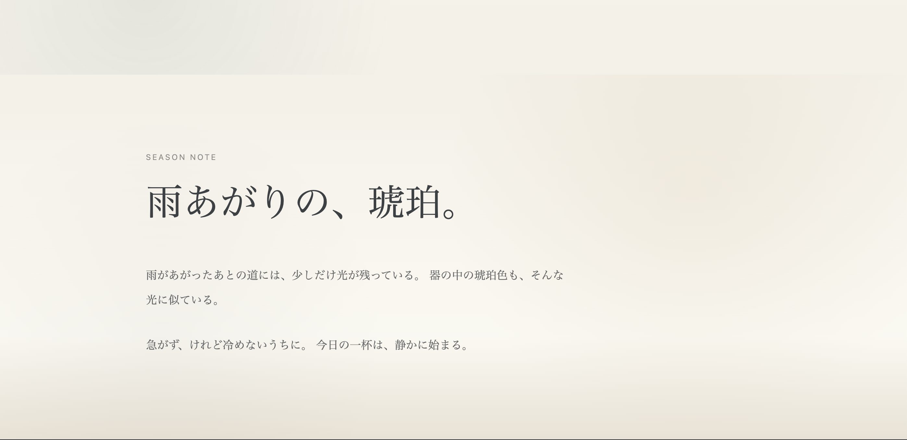
Overview
夏の午後に、少し立ち止まる。
RO FIKAは、夏の午後に少し立ち止まるような時間をテーマにした、架空カフェの1ページブランドサイトです。 余白、淡い色、小窓モチーフ、英字タイポグラフィを使い、その場所に流れていそうな空気をWeb上で表現しました。
Concept / Design
小窓と淡い色で空気感を作る。
小窓モチーフで窓辺の光を表現し、ミルクホワイトや淡いブルーで軽さを出しました。 大きな英字タイポグラフィと短い日本語コピーを組み合わせ、説明しすぎずに雰囲気が伝わる画面を目指しています。
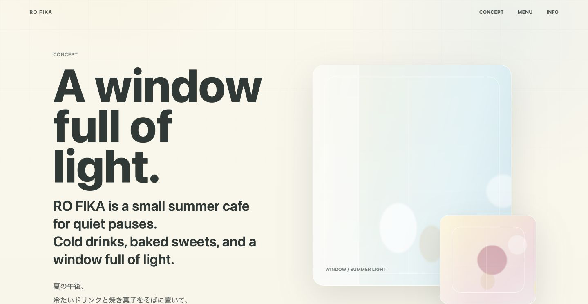
Sections
商品ではなく、過ごす時間へ。
Menuは単なる商品一覧ではなく、カフェで過ごす時間を想像できる編集面として設計しました。 FIKA Timeは drink / taste / look outside / stay で行為を短く示し、Galleryは午後の断片を置く軽い骨組みにしています。
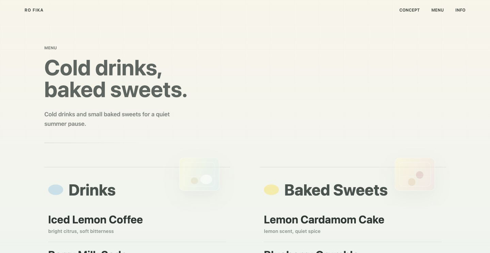
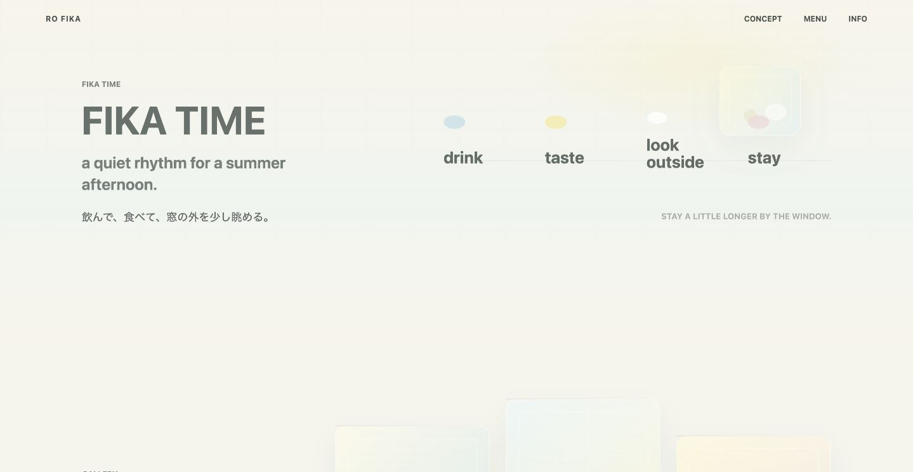
Responsive
スマホでも軽く見せる。
スマホ表示でも横スクロールが出ないように調整し、Galleryは2列構成で軽く見せています。 英字タイポグラフィが画面を圧迫しすぎないよう、文字サイズと余白を調整しました。
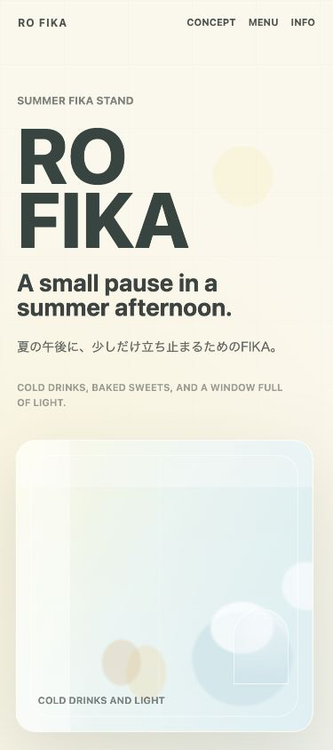
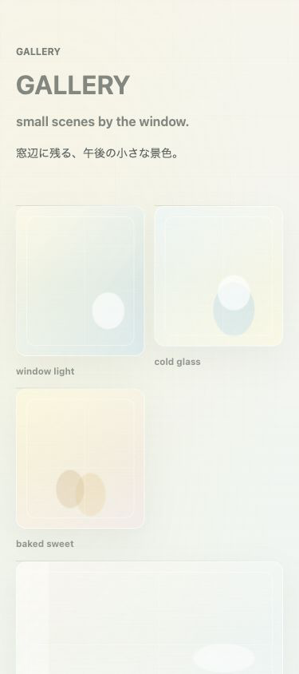
Learning
動きよりも、安定性を優先する。
Galleryにはスクロール演出をかけず、安定性と見やすさを優先しました。 窓の動きはRO FIKA本体のLive Siteで確認できるようにし、ポートフォリオ側ではスクリーンショット中心に紹介しています。
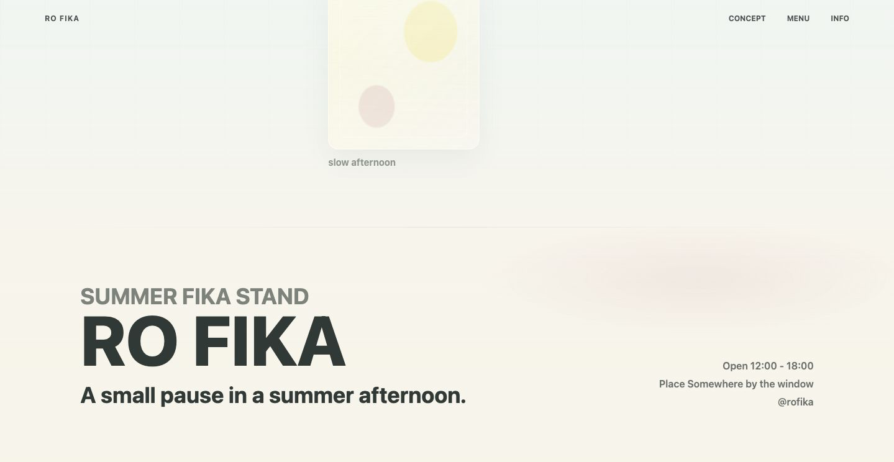